COMMAND INJECTION
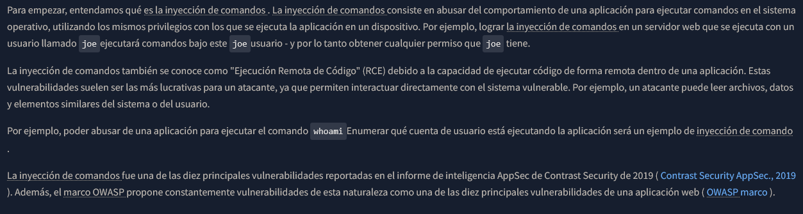
DISCOVERING COMMAND INJECTION
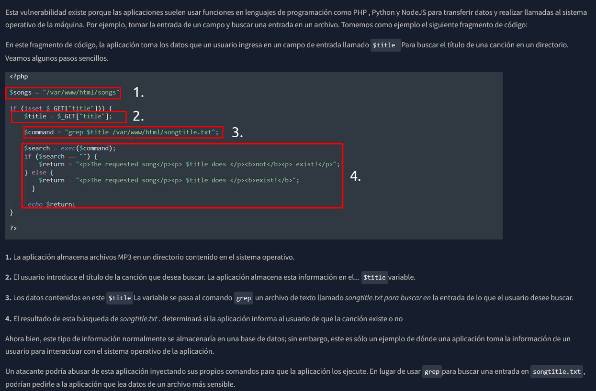
EXPLOITING COMMAND INJECTION
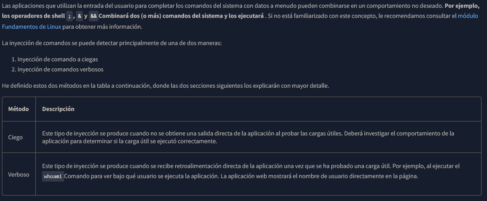
Detecting Blind Command Injection
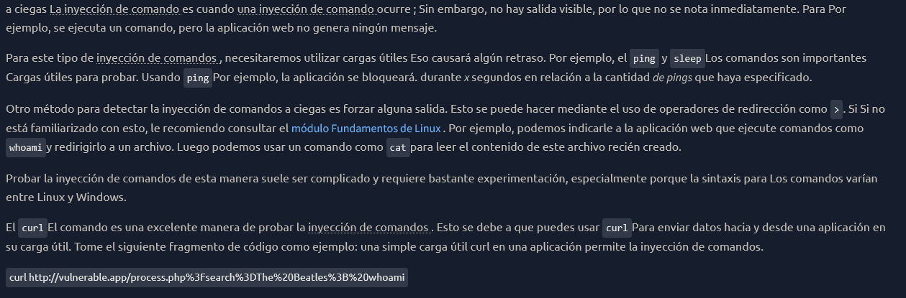
Detecting Verbose Command Injection
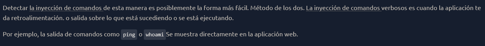
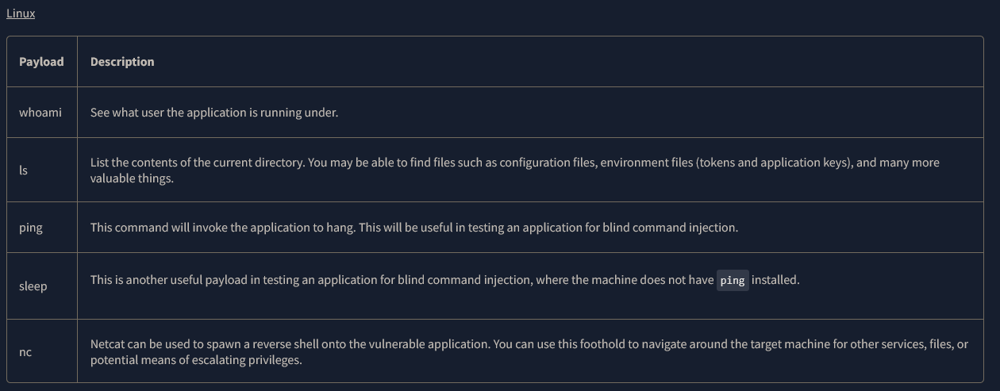
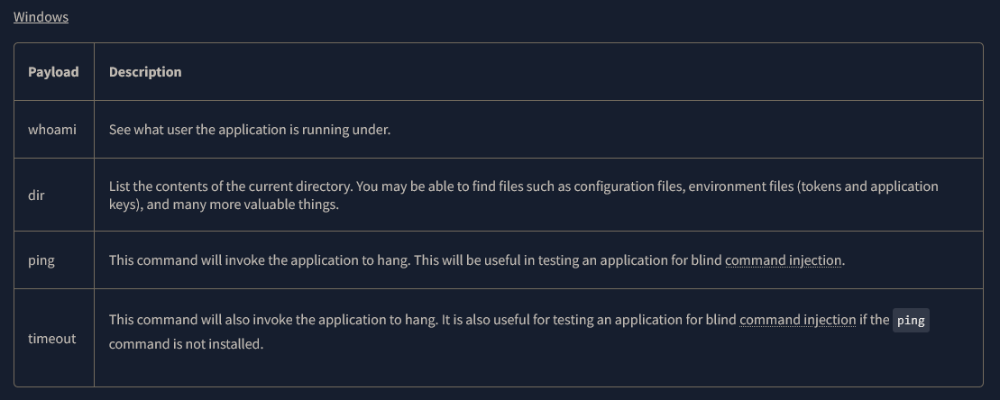
REMEDIATING COMMAND INJECTION
Estas funciones aceptan entradas como cadenas o datos de usuario y ejecutan lo que se proporciona en el sistema. Cualquier aplicación que utilice estas funciones sin las comprobaciones adecuadas será vulnerable a la inyección de
comandos.
Funciones vulnerables por lenguaje de programacion
PHP
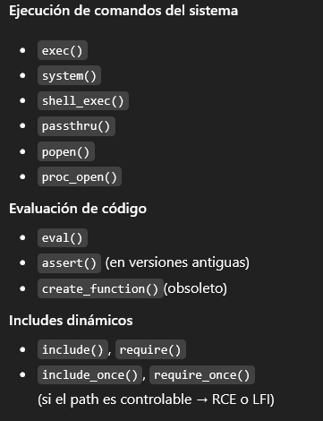
Python
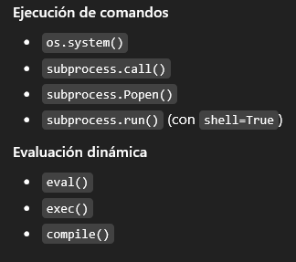
JAVASCRIPT (Node JS)
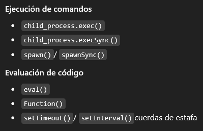
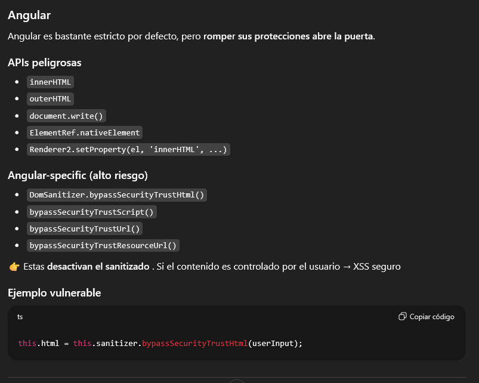
REACT
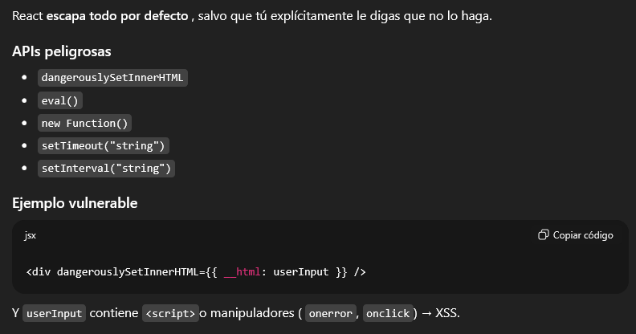
VUE.JS
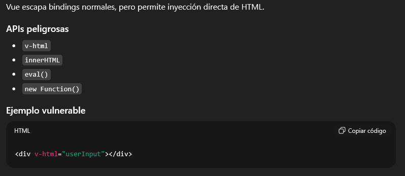
JAVA
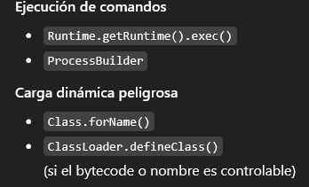
C / C++
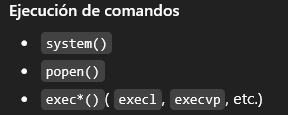
RUBY
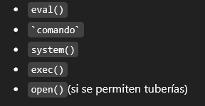
Input Sanitisation
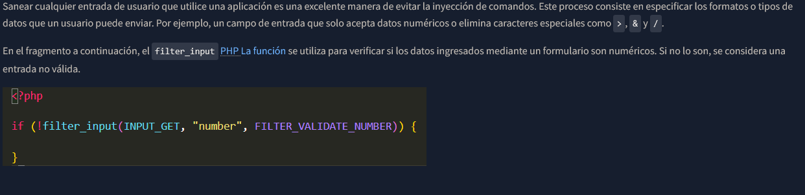
Bypassing Filters
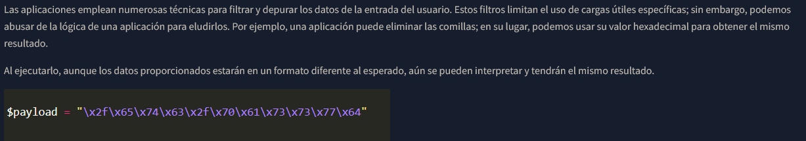
Testing
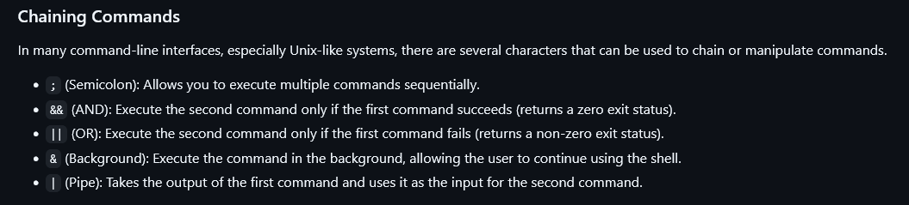